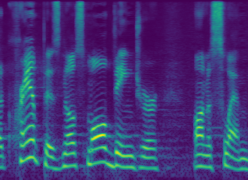

A Generative Model for Audio in the Frequency Domain
June 5, 2019
Existing generative models for audio have predominantly aimed to directly model time-domain waveforms. MelNet instead aims to model the frequency content of an audio signal. MelNet can be used to model audio unconditionally, making it capable of tasks such as music generation. It can also be conditioned on text and speaker, making it applicable to tasks such as text-to-speech and voice conversion. The full paper is available on arXiv: https://arxiv.org/abs/1906.01083.
Demo: Select a speaker and a sentence to view a spectrogram generated by MelNet. Play the audio to visualize how the frequencies change over time.
Speaker:
Text:

The Frequency Domain
We begin with a brief primer on time and frequency representations of audio.
A signal has equivalent representations in the time domain and the frequency domain. This notion is pervasive in the analysis of highly periodic signals such as audio waveforms. In the time domain, audio is represented as a one-dimensional waveform—amplitude as a function of time. By way of the Fourier transform, this waveform can be decomposed into a sum of periodic signals. The amplitudes and frequencies of these periodic signals constitute the waveform's frequency-domain representation, which is visualized in the animation below:
A visualization of the relationship between a function in the time domain and the frequency domain. The time-domain waveform can be represented as a weighted sum of periodic functions of varying frequencies. [Image source]
Time-Frequency Representations
MelNet models spectrograms, which are time-frequency representations of audio. Time-frequency representations lie in-between the time and frequency domains. They preserve the high-level temporal structure of the time-domain signal, but locally apply a transformation to the frequency domain. The resulting two-dimensional representation can be thought of as a sequence of frequency responses. Time-frequency representations highlight how the tones and pitches within an audio signal vary through time. Intuitively, such a representation could be helpful for modelling data such as music, as salient structure such as notes are easier to observe and ostensibly easier to model. To further align our representations with human perception, we transform the frequency axis of the spectrogram to the Mel scale. The Mel scale is designed to emphasize frequencies which are more important to human perception.
In addition to being well-aligned with human perception, spectrograms offer potential benefits from a modelling standpoint. Modelling long-range dependencies in audio waveforms is challenging because a single second of audio spans tens of thousands of timesteps in the time domain. However, the same signal spans only several hundreds of timesteps in spectrograms, potentially easing the task of capturing long-range temporal dependencies.
Mel-spectrogram representation
Waveform representation
Spectrogram and waveform representations of the same four-second audio signal. The waveform spans nearly 100,000 timesteps whereas the temporal axis of the spectrogram spans roughly 400. Complex structure is nested within the temporal axis of the waveform at various timescales, whereas the spectrogram has structure which is smoothly spread across the time-frequency plane.
Model
Spectrograms have been the preferred representations for the vast majority of discriminative tasks involving audio, so it seems natural to use spectrograms for generative modelling as well. To model the distribution over spectrograms, we devise a highly expressive model which synthesizes many recent advances in autoregressive modelling.
Autoregressive Modelling
Autoregressive models learn to model complex, high-dimensional distributions by modelling a sequence of simpler distributions.
This approach, whereby a model is trained to predict one element at a time, has been successfully applied to a wide variety of data modalities—including images, text, and waveforms. MelNet applies this same approach to the modelling of spectrograms. Much like autoregressive image models such as PixelCNN estimate a distribution pixel-by-pixel over the spatial dimensions of an image, MelNet estimates a distribution element-by-element over the time and frequency dimensions of a spectrogram.
We experiment with two different autoregressive orderings. The first is a simple time-major ordering which proceeds through each spectrogram frame from low to high frequency, before progressing to the next frame. The second is a multiscale ordering which is visualized below and further described in the following section.
Autoregressive generation of spectrograms using a time-major ordering (left) and a multiscale ordering (right). For visualization purposes, the animation generates a 8x8 patch, rather than a single element, at each timestep.
Multiscale Modelling
One drawback of autoregressive models is that they tend to learn local structure much better than global structure. When modelling images with a standard row-major ordering, this results in generated samples which have realistic textures but lack coherent high-level structure at the level of objects and higher-level scene composition. This problem is particularly noticeable when modelling high-dimensional distributions. Since we aim to model spectrograms with hundreds of thousands of dimensions, it's essential to introduce measures to counteract these effects. To this end, we use a multiscale model which generates spectrograms in a coarse-to-fine order. A low-resolution, subsampled spectrogram that captures high-level structure is generated initially, followed by an iterative upsampling procedure that adds high-resolution details. By generating spectrograms in this manner, it is possible to decouple the tasks of learning local and global structure.
A sampled spectrogram viewed at different stages of the multiscale generation procedure. The initial tier dictates high-level structure and subsequent tiers add fine-grained details. Each upsampling tier doubles the resolution of the spectrogram, resulting in the initial tier being upsampled by a factor of 32.
Unconditional Audio Generation
For the task of unconditional audio generation, we train MelNet on sequences of unlabelled audio. Unconditional generative models have demonstrated impressive results for images and text—GANs have been able to generate photorealistic faces and language models have generated realistic prose. However, unconditional generative models for audio have arguably been less successful at generating realistic samples. Nonetheless, unconditional generation is an insightful task since generated samples offer insights into the structures that a model has learned. A model trained on speech should learn to generate phonemes, words, and higher levels of linguistic structure. A model trained on music should learn to generate basic musical structures such as notes, chords, melody, and rhythm.
Experiments
We train MelNet to generate audio unconditionally using three diverse datasets:
Music: We use a dataset of solo piano performances recorded as part of an international piano competition. The data was recorded over several years, resulting in year-to-year variations in recording conditions.
Single-Speaker: We use a speech dataset consisting of a single speaker reading audiobooks in a quiet environment. The books are read in a highly expressive manner, including significant variation in intonation and prosody as well as various character voices.
Multi-Speaker: We use a multi-speaker, multilingual speech dataset which contains speech from speakers of 145 different nationalities, covering a wide range of accents, ages, ethnicities and languages.
Dataset:
Sample:
Text-to-Speech
While generating samples from unconditional distributions is insightful, it's not particularly useful. Conditional generation tasks, on the other hand, generally have more practical applications. Examples of conditional generation tasks in other domains include image inpainting, super-resolution, and language translation. To demonstrate a practical application for MelNet, we apply it to the task of text-to-speech, i.e. text-conditional audio generation. We also demonstrate that MelNet can be conditioned on speakers, allowing it to jointly learn the speaking characteristics of thousands of individuals.
Learned Alignment
To learn text-to-speech in an end-to-end manner, MelNet learns a latent alignment between the audio and text, which is represented as a sequence of characters. To accomplish this, we add an attention mechanism which, at each timestep, emits a distribution over the character sequence which effectively selects a set of characters which are relevant for pronouncing the next word. Below is an example of a learned alignment between a spectrogram and text.
Learned alignment between a spectrogram and the character sequence “that we mother nature thank you”. The columns correspond to the learned attention distributions for each timestep. The text is read with long, deliberate pauses which appear as flat regions in the alignment.
MelNet learns a fairly sparse attention distribution—at each timestep it only attends to a few recent characters and ignores the rest. This is consistent with the way in which humans read text, as each phoneme can generally be deduced from a small neighborhood of adjacent characters.
Experiments
We train MelNet to perform text-to-speech using a single-speaker dataset and a multi-speaker dataset:
Single-Speaker: We reuse the single-speaker audiobook dataset used for the unconditional speech generation task, but also use the transcripts during training.
Multi-Speaker: We use a multi-speaker dataset with roughly 2,000 different speakers (~10 minutes per speaker) with significant variation in speaking styles and recording conditions. The transcripts for this dataset are fairly noisy—there are various transcription errors, the text is unnormalized, and capitalization and punctuation are omitted. As a result, the model must infer proper intonation and prosody from the semantic content of the text.
Dataset:
Sample:
“My dear Fanny, you feel these things a great deal too much. I am most happy that you like the chain,”
Conclusion
MelNet combines various representational and modelling improvements to yield a highly expressive, broadly applicable, and fully end-to-end generative model of audio. We believe MelNet presents a promising direction for future work across a wide variety of audio generation tasks. Furthermore, MelNet is able to uncover salient structure from large quantities of unlabelled audio, suggesting future applications to unsupervised representation learning for audio.